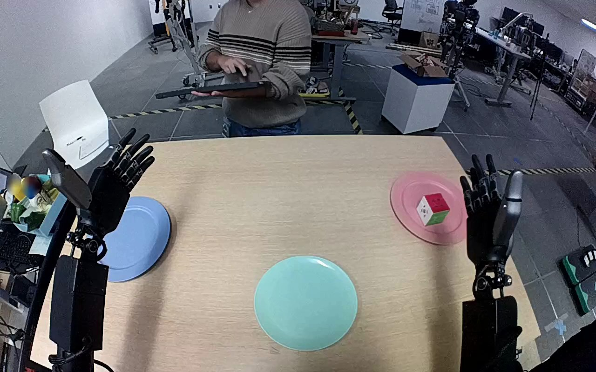

NVIDIA GR1 · 46
Video 46

Visual review action_review.json
{
"prompt_protocol": "humanoid_action_v1",
"prompt_provenance": "visually_authored_from_video_and_initial_frame",
"reviewed_contact_sheets": [
"sheet_001.jpg"
],
"inspected_frame_stride": 2,
"inspected_sampled_frame_count": 60,
"initial_scene": "Egocentric view over a tabletop with both robot hands open. A red, white, and green cube rests in the pink plate on the robot right; the teal plate nearer the center is empty. A blue plate is on the left. A person opposite the table holds a controller but does not touch the robot or task objects.",
"observed_sequence": [
{
"start_frame": 0,
"end_frame": 42,
"action": "The right arm moves its open hand toward the cube in the pink plate; the left hand remains open beside the blue plate.",
"confidence": "high"
},
{
"start_frame": 43,
"end_frame": 70,
"action": "The right hand encloses and closes around the cube while it remains over the pink plate.",
"confidence": "high"
},
{
"start_frame": 71,
"end_frame": 88,
"action": "The right hand lifts the cube clear of the pink plate and begins bringing it inward toward the teal plate.",
"confidence": "high"
},
{
"start_frame": 89,
"end_frame": 105,
"action": "The right arm transports the held cube leftward and toward the robot, positioning it over the teal plate.",
"confidence": "high"
},
{
"start_frame": 106,
"end_frame": 112,
"action": "The right hand lowers the cube onto the teal plate; intermittent circular blur obscures some cube details, while frame 108 clearly shows the cube and fingers.",
"confidence": "high"
},
{
"start_frame": 113,
"end_frame": 119,
"action": "The right fingers open, leaving the cube upright on the teal plate. Frame 118 clearly shows the cube on the plate between opened fingers; the final hand remains adjacent without withdrawal.",
"confidence": "high"
}
],
"arm_hand_roles": {
"right": "Sole manipulating hand: grasps, lifts, transports, lowers, and releases the cube onto the teal plate.",
"left": "Remains open at the left side of the table, with slight late posture change but no object contact or supporting role.",
"coordination": "Single-handed manipulation; no hand-to-hand transfer or human contact."
},
"anatomical_side_evidence": {
"description": "The generation view looks forward from the robot over its paired forearms, which enter from the lower left and lower right. The active arm remains attached through the lower-right forearm, and the open hands show mirrored thumb placement consistent with left and right hands in this egocentric body orientation. This establishes robot-relative right for the manipulating arm rather than assigning a side solely from target position.",
"confidence": "high",
"uncertainty": "Torso and shoulders are outside the egocentric view; side identification uses paired forearm continuity and visible hand anatomy."
},
"uncertainties": [
"Intermittent circular blur covers the cube during lowering and the last frame; the unblurred frame 118 shows it upright on the teal plate with the hand open.",
"The source calls the object a Rubik's cube, but visible colored faces with holes do not establish a functional Rubik's puzzle; the prompt uses its visible colors and cube shape."
],
"annotation_discrepancies": [
"The original instruction names a Rubik's cube; the visible object is a red, white, and green cube without a clearly visible puzzle grid. The instructed right-hand pink-to-teal transfer agrees with the observed motion."
],
"evidence_frame_indices": [
0,
46,
76,
88,
106,
108,
118,
119
],
"selected_execution_status": "success",
"terminal_state": "The cube rests upright on the teal plate after the right fingers open. The right hand stays beside the cube over the plate, and the left hand remains idle. The pink plate is empty.",
"video_id": "46",
"dataset": "NVIDIA_GR1_100",
"dedicated_review_agent": "review_gr1_46",
"review_source_video": "NVIDIA_GR1_100/46/original/original.mp4",
"source_frame_count": 120,
"source_fps": 20.0,
"native_detail_frames": [
46,
76,
88,
106,
108,
118,
119
],
"world_model_prompt": "The robot closes its right hand around the red, white, and green cube on the pink plate and lifts it free. It carries the cube to the teal plate, lowers it onto the plate, and opens its fingers to leave the cube resting there, with the hand still beside it. Keep the camera fixed; preserve robot geometry, physically valid joint motion, and normal gripper opening and closing.",
"original_task_instruction": "Use the right hand to pick up rubik's cube from pink plate to teal plate.",
"selected_segment": {
"start_frame": 0,
"end_frame_exclusive": 120,
"reason": "Complete original single-task reference; no cropping or trimming requested."
},
"source_video_sha256": "c81e8a5c2609c9ead1be512625224c1f80639207a0552823b4ac83f3cfac16c8",
"review_completed_at": "2026-10-13T18:09:04.810664+00:00"
}